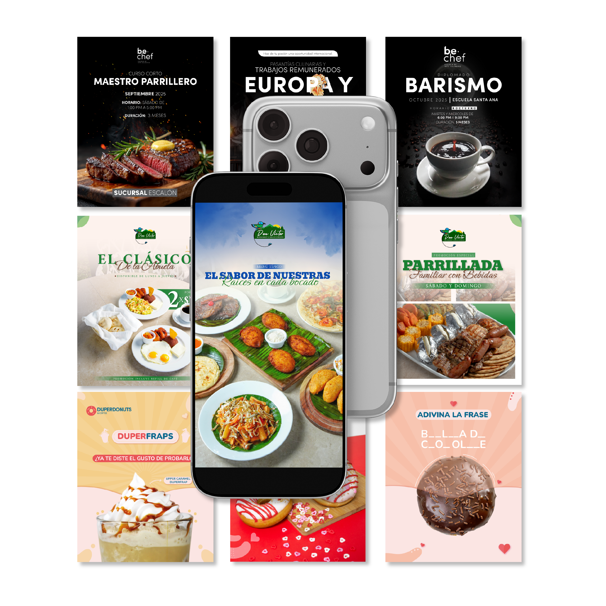
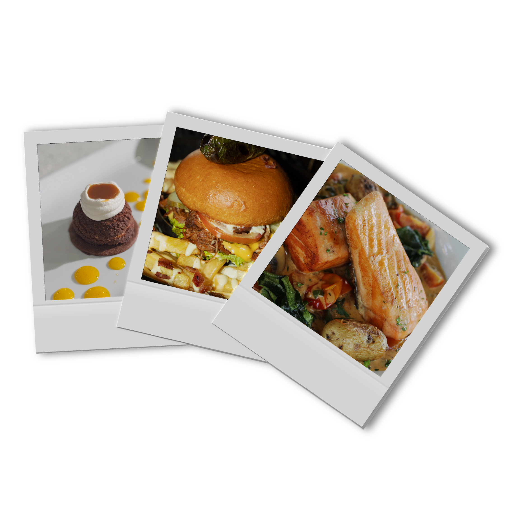
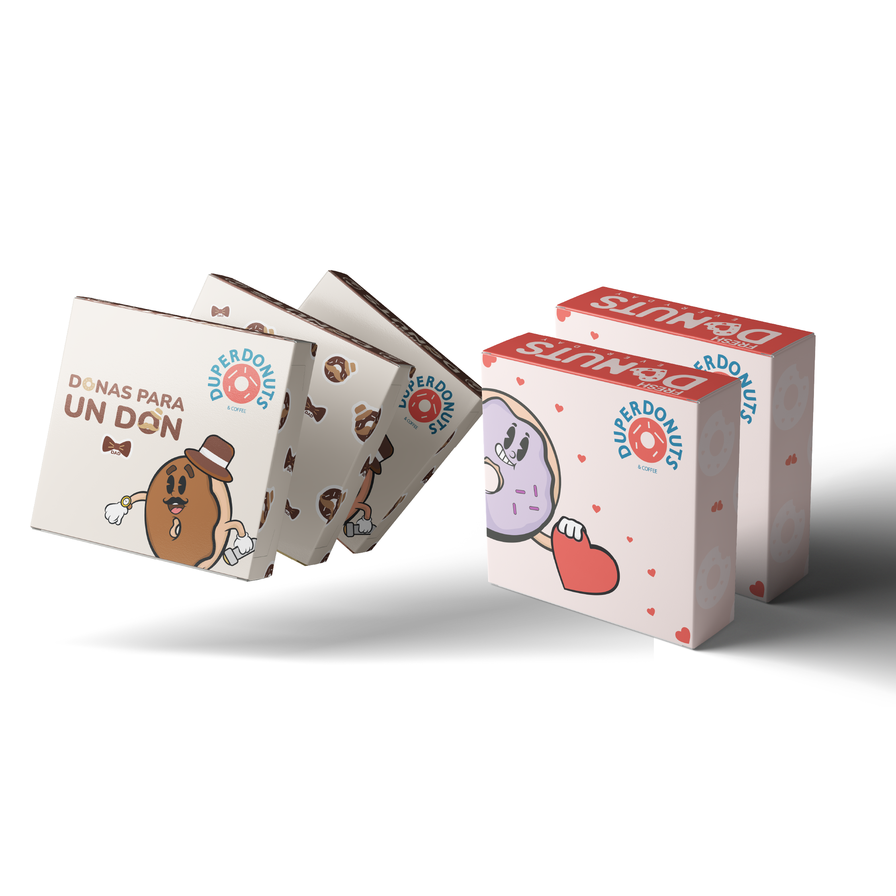
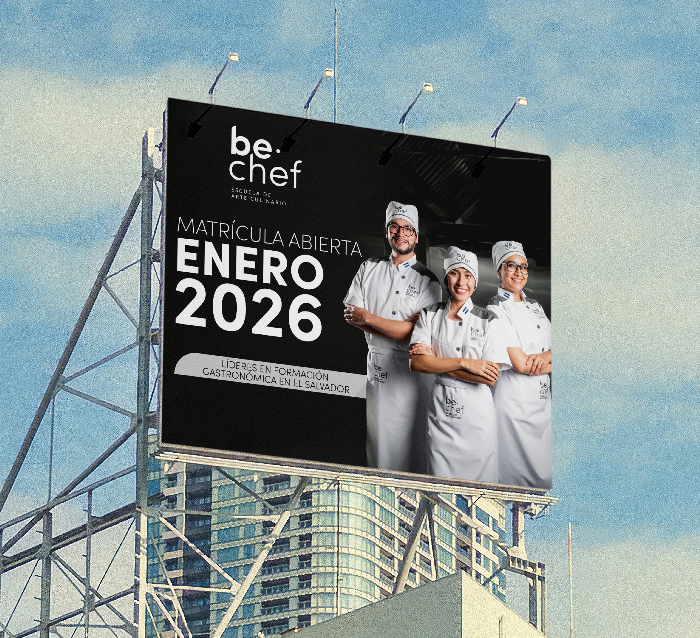
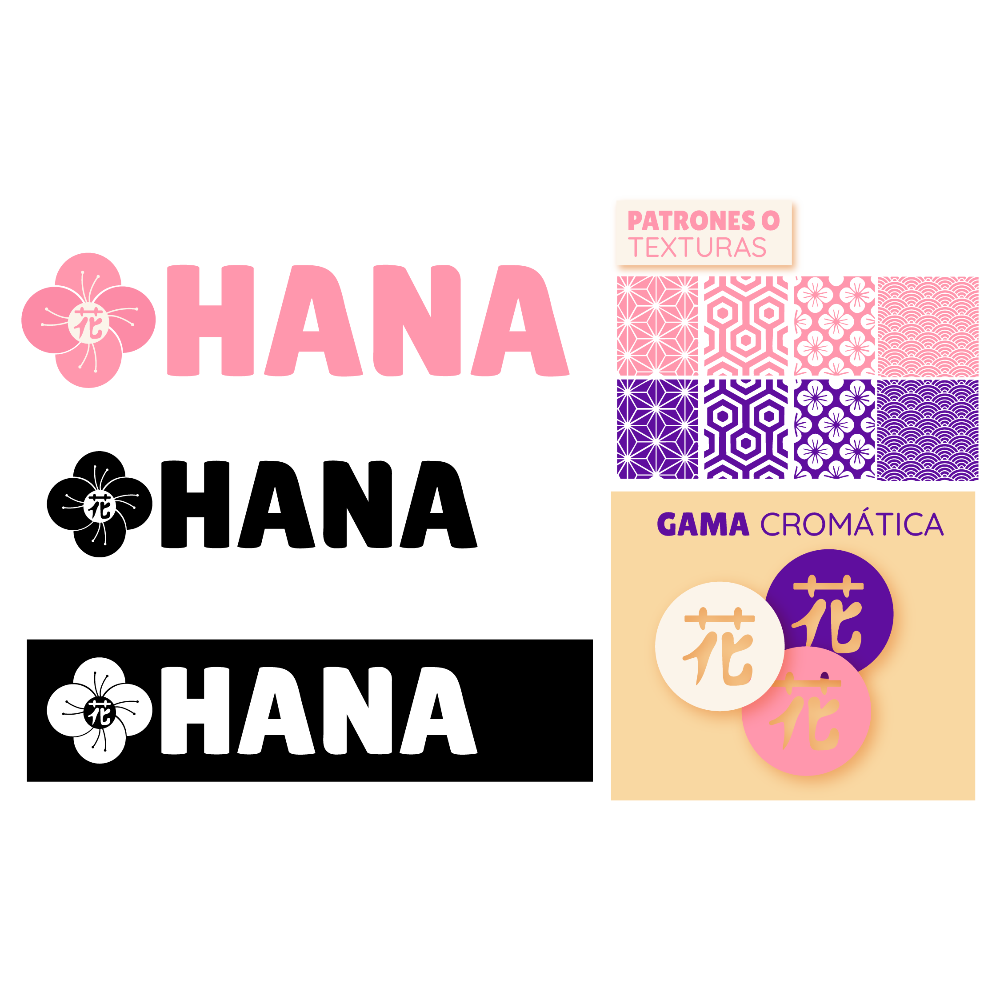
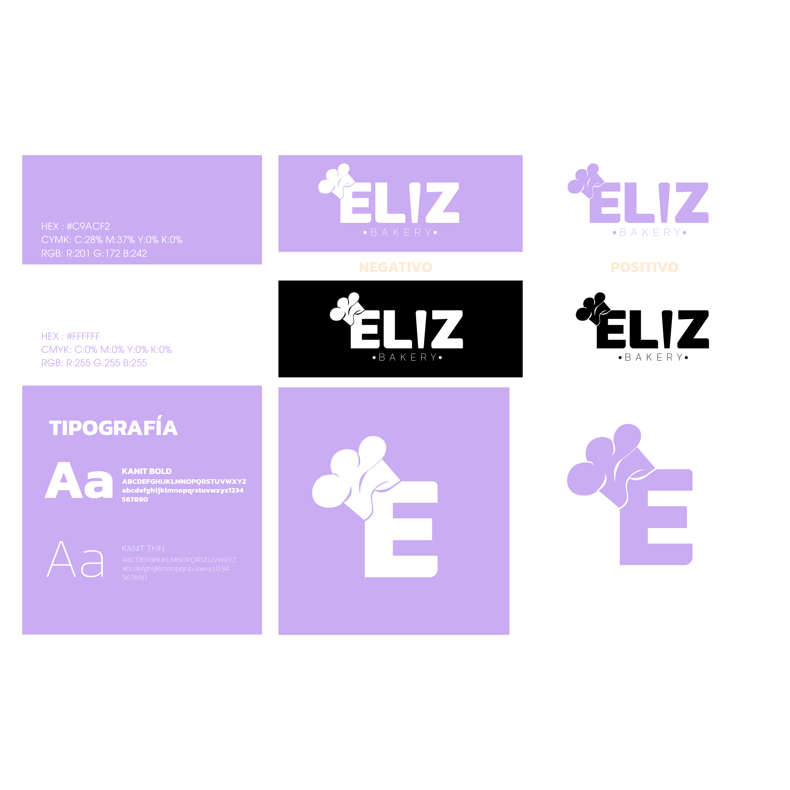

Desarrollo proyectos desde la conceptualización hasta la creación de piezas gráficas para la comunicación en redes sociales, construyendo una línea gráfica visual que permita identificar y mantener la identidad de la marca.
VER MÁSRealización de fotografías con enfoque publicitario para redes sociales y medios impresos, principalmente para marcas del rubro gastronómico, buscando resaltar visualmente sus productos y generar una comunicación atractiva.



Desarrollo de proyectos desde la conceptualización hasta la creación de artes para medios impresos y packaging, manteniendo una comunicación visual coherente con la identidad y el tono de la marca.
DUPERDONUTS: Packaging día de las madres
DUPERDONUTS: Packaging día de los padres


Conceptualización y desarrollo de piezas publicitarias para medios exteriores, adaptando el mensaje y la composición visual para lograr una comunicación clara, atractiva y efectiva a gran escala.

Proyecto realizado en ciclo pasado para proyecto de cátedra sobre la realización de una identidad visual para una marca creada de 0 que trata sobre postres japoneses.
Programas utilizados para la realización: Illustrator y Photoshop.

Conceptualización y desarrollo de la imagen visual para una marca emprendedora de bakery, creando una identidad que refleje su esencia y permita comunicarla de manera coherente en sus diferentes aplicaciones.